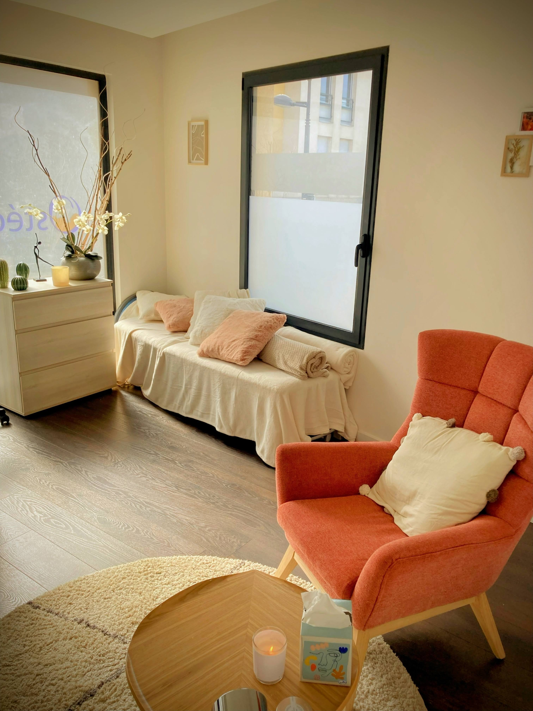

Prendre rendez-vous est une étape importante du changement. C'est
le premier pas sur le chemin pour aller vers ce que vous
souhaitez!
C'est parfois difficile, alors si vous avez besoin
d'échanger oralement pour savoir si je suis la bonne personne pour
vous accompagner ou simplement discuter de vos appréhensions, vous
pouvez m'appeler☎️.
Si je ne suis pas disponible, laissez moi un
message, je vous rappellerai.
Une séance peut se dérouler soit à mon à mon cabinet soit en visio, ça ne change rien à la qualité de l'accompagnement tant que c'est ce qui vous convient le mieux
Le déroulement d'une séance
Prévoyez entre 45 minutes et 1h environ par séance (et jusqu'à 1h30 pour la première).
La première séance est déterminante pour nous permettre de bien
faire connaissance et déterminer précisément votre/vos
objectif(s). Cette étape est essentielle et détermine la suite de
la prise en charge.
Une séance entière peut y être consacrée, cela fait partie
intégrante du soin.
La séance d'hypnose à proprement parler consiste à vous accompagner vers l'état de conscience amplifiée en utilisant toutes les informations recueillies lors de l'entretien afin de guider au mieux le travail que nous allons faire ensemble.
Je conserve les informations recueillies lors de nos séances pour mon usage strictement personnel, dans le cadre du suivi de votre prise en charge.
Chaque prise en charge est personnalisée pour correspondre au mieux aux besoin de chacun.
